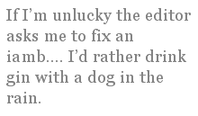

I am English born, mostly Australian and American raised. I write formal poetry.
Rhymes are fairly easy. Metre, or meter — depending on where I am, or where I am sending to — is harder. Stresses on words fall differently with different accents. Some words even lose syllables — “familiar” is a troublesome one for me. Is it fam-il-yar or fam-il-ee-air? Likewise “violet”— could be “vye-let”, “voy-let” or “vye-o-let”. Depends on the accent that the voice in my mind is using when I am writing. (Try writing a sonnet in local diction with that lot clamouring in your head... it gets rough.)
But, I muddle through. I’ve found words do exist that have no regional variances; I’ve found words exist that only occur in certain accented manners and thus cannot be read any way but the way in which they exist. These words are usually small words....gin, dog, rain. I find that I can create quite lovely things with small words, though, if I’m in the mood.
Of course, sometimes, I just don’t give a damn. I use any word I want. Anywhere I want to put it. If I’m lucky, the editor has the same accented stresses in his or her head when my poem is being read. If I’m unlucky the editor asks me to fix an iamb. I’d rather be rejected. I’d rather drink gin with a dog in the rain. Fixing iambs — figuring out how a word might sound to the majority of people who don’t have a trio of accents playing holy hell with their inner ear — is horribly difficult. I’ve been known to beg off doing it, even when I know it means the sonnet (it is almost invariably a sonnet, I seem to get away with my odd sense of stresses in sestinas or villanelles) won’t be seeing the light of printed day any time soon. It’s just easier than trying to fix what I can’t seem to see as broke.
I suppose it is a little like being tone deaf. I can play something that is absolutely note perfect and which sounds great to me... but I never know for sure if the instrument is in tune. Or if it’s a case of the listener being half deaf.
At any rate, it’s a battle, this Chimaera of an inner voice I’ve got. But, without it, I don’t think I’d have honed my craft as finely as I’ve been forced to. And, I don’t think I’d’ve played with words as much — funny how one thing will lead to another in life — if ad-vert-ise-ment / ad-ver-tise-ment hadn’t flummoxed me as a child, would I have become the word conscious person I have become? Without a consciousness of words, their interplay, their sounds, their ability to create beauty or consonance, would I be a poet?
Perhaps. P’rhaps. Maybe.
Ever After
I’m sitting on the deck of the HMS Victory. My father is telling me that I was born in the last place that Nelson ever saw of England. He pronounces Portsmouth Portsmiff. I am six years old. We are English. This is our place in the world.
I am sitting in a railroad apartment in Brooklyn, black cherry kool-aid in hand. You’re fifth generation Greenpointer no matter what your father is, my grandmother tells me. I wasn’t born here though, so it never sinks in. I am destined to never be considered truly American — no matter how many generations of my grandmother’s line got here early on.
I am sitting in the back of a ute, the hard red soil going past in blazing Technicolor, the sun raising tiny heat blisters on my forearms. Heading for somewhere west of Sydney, in December. I’m twelve years old. Asked if I want to sit in the cab, I shake my head, no. I can take it. I want to take it. I want to be able to. More than anything I want to be Australian.
I am sitting on an outside concrete bench at Sacramento State University, I am nineteen. I have an accent that I can turn into anything I used to be, depending on who I am impressing at the moment. When I’m not thinking about it, it is usually Australian. It impresses me the most about myself. California boys find me terribly attractive.
I am sitting in my grandfather’s garden. There is a golf course behind his house, with indentions in it that were made by bombings in the Second World War. I am twenty-two. The London Mod boys find my colonial version of sharp scooter style terribly attractive.
I am sitting in a county court house, applying for a marriage license in California. I found someone who was born, lived and now is getting married all within a single 90 mile range terribly attractive.
I am sitting in the passenger side of a 64 Cadillac. The last of the caddies with fins. I will go on my honeymoon to Elvis Presley’s Graceland, traveling Route 66 part of the way. I find this brash enthusiastic Americanness, like my new husband’s leather jacket and rockabilly pompadour, terribly attractive.
I am sitting at a keyboard. Married fifteen years now. My accent is less English, less Australian. Not 100% anything. Occasionally, and especially after seeing old friends or relatives, I will lapse back into familiar commonwealth speech patterns — pronouncing things like tuna chuna or aluminum al-u-min-i-um; my children find it terribly unattractive. The irony does not escape me.
Along with other awards, Juleigh Howard-Hobson has won the prestigious Australian ANZAC Day Award for poetry. Her work has recently appeared in or will appear in The Shit Creek Review, Worm, Snakeskin, Lucid Rhythms, Mobius, Pemmican, The Barefoot Muse, Mezzo Cammin, The Hyper Texts, Shatter Colors Literary Review, The Raintown Review, The Quarterly Journal of Food and Car Poems, and Contemporary Rhyme.